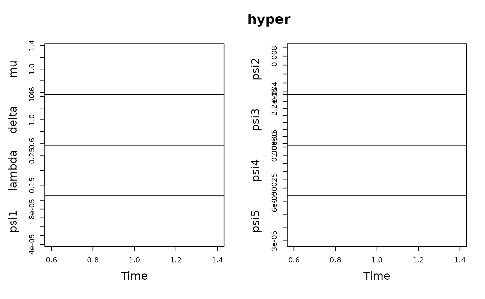

The class PriorBSVARSIGN presents a prior specification for the homoskedastic bsvar model.
Public fields
pa positive integer - the number of lags.
hypera
(N+3)xSmatrix of hyper-parameters \(\mu, \delta, \lambda, \psi\).Aa
NxKnormal prior mean matrix for the autoregressive parameters.Va
KxKmatrix determining the normal prior column-specific covariance for the autoregressive parameters.San
NxNmatrix determining the inverted-Wishart prior scale of error terms covariance matrix.nua positive scalar greater than
N+1- the shape of the inverted-Wishart prior for error terms covariance matrix.dataan
TxNmatrix of observations.Yan
NxTmatrix of dependent variables.Xan
KxTmatrix of independent variables.Ysocan
NxNmatrix with the sum-of-coefficients dummy observations.Xsocan
KxNmatrix with the sum-of-coefficients dummy observations.Ysuran
NxNmatrix with the single-unit-root dummy observations.Xsuran
KxNmatrix with the single-unit-root dummy observations.mu.scalea positive scalar - the shape of the gamma prior for \(\mu\).
mu.shapea positive scalar - the shape of the gamma prior for \(\mu\).
delta.scalea positive scalar - the shape of the gamma prior for \(\delta\).
delta.shapea positive scalar - the shape of the gamma prior for \(\delta\).
lambda.scalea positive scalar - the shape of the gamma prior for \(\lambda\).
lambda.shapea positive scalar - the shape of the gamma prior for \(\lambda\).
psi.scalea positive scalar - the shape of the inverted gamma prior for \(\psi\).
psi.shapea positive scalar - the shape of the inverted gamma prior for \(\psi\).
Methods
Method new()
Create a new prior specification PriorBSVAR.
Usage
specify_prior_bsvarSIGN$new(
data,
p,
exogenous = NULL,
stationary = rep(FALSE, ncol(data))
)Arguments
datathe
TxNdata matrix of observations.pa positive integer - the autoregressive lag order of the SVAR model.
exogenousa
Txdmatrix of exogenous variables.stationaryan
Nlogical vector - its element set toFALSEsets the prior mean for the autoregressive parameters of theNth equation to the white noise process, otherwise to random walk.
Examples
# a prior for 5-variable example with one lag and stationary data
data(optimism)
prior = specify_prior_bsvarSIGN$new(optimism, p = 1)
prior$B # show autoregressive prior mean
Method estimate_hyper()
Estimates hyper-parameters with adaptive Metropolis algorithm.
Usage
specify_prior_bsvarSIGN$estimate_hyper(
S = 10000,
burn_in = S/2,
mu = FALSE,
delta = FALSE,
lambda = TRUE,
psi = FALSE
)Arguments
Snumber of MCMC draws.
burn_innumber of burn-in draws.
muwhether to estimate the hyper-parameter in the sum-of-coefficients dummy prior.
deltawhether to estimate the hyper-parameter in the single-unit-root dummy prior.
lambdawhether to estimate the hyper-parameter of the shrinkage in the Minnesota prior.
psiwhether to estimate the hyper-parameter of the variances in the Minnesota prior.
Examples
# specify the model and set seed
set.seed(123)
data(optimism)
prior = specify_prior_bsvarSIGN$new(optimism, p = 4)
# estimate hyper parameters with adaptive Metropolis algorithm
prior$estimate_hyper(S = 10, psi = TRUE)
# prior$estimate_hyper(S = 10000, psi = TRUE)
# trace plot
hyper = t(prior$hyper)
colnames(hyper) = c("mu", "delta", "lambda", paste("psi", 1:5, sep = ""))
plot.ts(hyper)
Examples
# a prior for 5-variable example with one lag
data(optimism)
prior = specify_prior_bsvarSIGN$new(optimism, p = 1)
prior$A # show autoregressive prior mean
#> [,1] [,2] [,3] [,4] [,5] [,6]
#> [1,] 1 0 0 0 0 0
#> [2,] 0 1 0 0 0 0
#> [3,] 0 0 1 0 0 0
#> [4,] 0 0 0 1 0 0
#> [5,] 0 0 0 0 1 0
## ------------------------------------------------
## Method `specify_prior_bsvarSIGN$new`
## ------------------------------------------------
# a prior for 5-variable example with one lag and stationary data
data(optimism)
prior = specify_prior_bsvarSIGN$new(optimism, p = 1)
prior$B # show autoregressive prior mean
#> NULL
## ------------------------------------------------
## Method `specify_prior_bsvarSIGN$get_prior`
## ------------------------------------------------
# a prior for 5-variable example with four lags
prior = specify_prior_bsvar$new(N = 5, p = 4)
prior$get_prior() # show the prior as list
#> $A
#> [,1] [,2] [,3] [,4] [,5] [,6] [,7] [,8] [,9] [,10] [,11] [,12] [,13] [,14]
#> [1,] 1 0 0 0 0 0 0 0 0 0 0 0 0 0
#> [2,] 0 1 0 0 0 0 0 0 0 0 0 0 0 0
#> [3,] 0 0 1 0 0 0 0 0 0 0 0 0 0 0
#> [4,] 0 0 0 1 0 0 0 0 0 0 0 0 0 0
#> [5,] 0 0 0 0 1 0 0 0 0 0 0 0 0 0
#> [,15] [,16] [,17] [,18] [,19] [,20] [,21]
#> [1,] 0 0 0 0 0 0 0
#> [2,] 0 0 0 0 0 0 0
#> [3,] 0 0 0 0 0 0 0
#> [4,] 0 0 0 0 0 0 0
#> [5,] 0 0 0 0 0 0 0
#>
#> $A_V_inv
#> [,1] [,2] [,3] [,4] [,5] [,6] [,7] [,8] [,9] [,10] [,11] [,12] [,13]
#> [1,] 1 0 0 0 0 0 0 0 0 0 0 0 0
#> [2,] 0 1 0 0 0 0 0 0 0 0 0 0 0
#> [3,] 0 0 1 0 0 0 0 0 0 0 0 0 0
#> [4,] 0 0 0 1 0 0 0 0 0 0 0 0 0
#> [5,] 0 0 0 0 1 0 0 0 0 0 0 0 0
#> [6,] 0 0 0 0 0 4 0 0 0 0 0 0 0
#> [7,] 0 0 0 0 0 0 4 0 0 0 0 0 0
#> [8,] 0 0 0 0 0 0 0 4 0 0 0 0 0
#> [9,] 0 0 0 0 0 0 0 0 4 0 0 0 0
#> [10,] 0 0 0 0 0 0 0 0 0 4 0 0 0
#> [11,] 0 0 0 0 0 0 0 0 0 0 9 0 0
#> [12,] 0 0 0 0 0 0 0 0 0 0 0 9 0
#> [13,] 0 0 0 0 0 0 0 0 0 0 0 0 9
#> [14,] 0 0 0 0 0 0 0 0 0 0 0 0 0
#> [15,] 0 0 0 0 0 0 0 0 0 0 0 0 0
#> [16,] 0 0 0 0 0 0 0 0 0 0 0 0 0
#> [17,] 0 0 0 0 0 0 0 0 0 0 0 0 0
#> [18,] 0 0 0 0 0 0 0 0 0 0 0 0 0
#> [19,] 0 0 0 0 0 0 0 0 0 0 0 0 0
#> [20,] 0 0 0 0 0 0 0 0 0 0 0 0 0
#> [21,] 0 0 0 0 0 0 0 0 0 0 0 0 0
#> [,14] [,15] [,16] [,17] [,18] [,19] [,20] [,21]
#> [1,] 0 0 0 0 0 0 0 0
#> [2,] 0 0 0 0 0 0 0 0
#> [3,] 0 0 0 0 0 0 0 0
#> [4,] 0 0 0 0 0 0 0 0
#> [5,] 0 0 0 0 0 0 0 0
#> [6,] 0 0 0 0 0 0 0 0
#> [7,] 0 0 0 0 0 0 0 0
#> [8,] 0 0 0 0 0 0 0 0
#> [9,] 0 0 0 0 0 0 0 0
#> [10,] 0 0 0 0 0 0 0 0
#> [11,] 0 0 0 0 0 0 0 0
#> [12,] 0 0 0 0 0 0 0 0
#> [13,] 0 0 0 0 0 0 0 0
#> [14,] 9 0 0 0 0 0 0 0
#> [15,] 0 9 0 0 0 0 0 0
#> [16,] 0 0 16 0 0 0 0 0
#> [17,] 0 0 0 16 0 0 0 0
#> [18,] 0 0 0 0 16 0 0 0
#> [19,] 0 0 0 0 0 16 0 0
#> [20,] 0 0 0 0 0 0 16 0
#> [21,] 0 0 0 0 0 0 0 1
#>
#> $B_V_inv
#> [,1] [,2] [,3] [,4] [,5]
#> [1,] 1 0 0 0 0
#> [2,] 0 1 0 0 0
#> [3,] 0 0 1 0 0
#> [4,] 0 0 0 1 0
#> [5,] 0 0 0 0 1
#>
#> $B_nu
#> [1] 5
#>
#> $hyper_nu_B
#> [1] 10
#>
#> $hyper_a_B
#> [1] 10
#>
#> $hyper_s_BB
#> [1] 100
#>
#> $hyper_nu_BB
#> [1] 1
#>
#> $hyper_nu_A
#> [1] 10
#>
#> $hyper_a_A
#> [1] 10
#>
#> $hyper_s_AA
#> [1] 10
#>
#> $hyper_nu_AA
#> [1] 10
#>
## ------------------------------------------------
## Method `specify_prior_bsvarSIGN$estimate_hyper`
## ------------------------------------------------
# specify the model and set seed
set.seed(123)
data(optimism)
prior = specify_prior_bsvarSIGN$new(optimism, p = 4)
# estimate hyper parameters with adaptive Metropolis algorithm
prior$estimate_hyper(S = 10, psi = TRUE)
#> **************************************************|
#> Adaptive Metropolis MCMC: hyper parameters |
#> **************************************************|
# prior$estimate_hyper(S = 10000, psi = TRUE)
# trace plot
hyper = t(prior$hyper)
colnames(hyper) = c("mu", "delta", "lambda", paste("psi", 1:5, sep = ""))
plot.ts(hyper)
